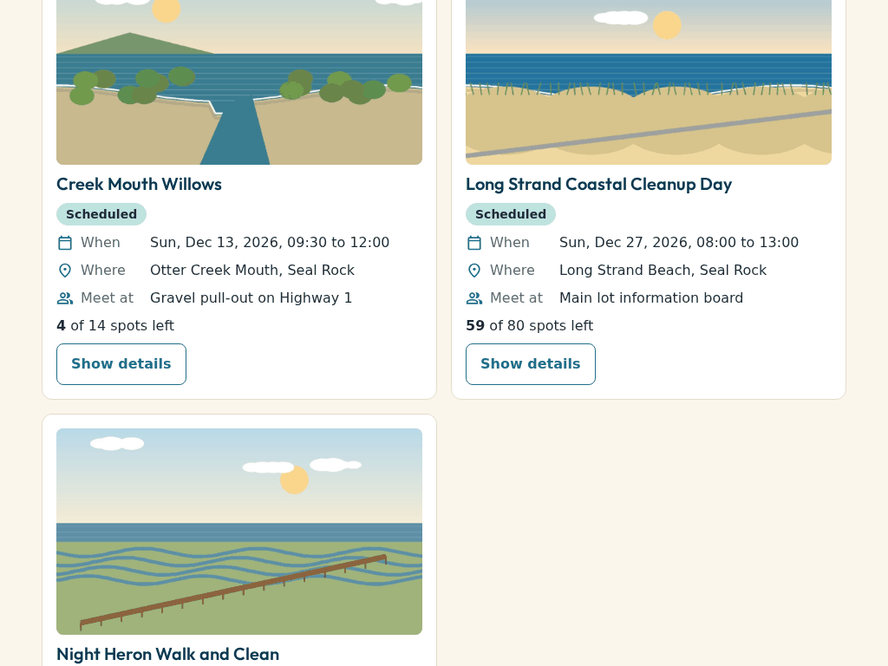

Every app you love is mostly lists: messages, songs, photos, orders. On a phone, a list has to scroll smoothly under a thumb, start fast on a slow network, say something useful when it is empty, and refresh with a pull. In this lesson Shoreline Crew's Cleanups screen stops being a long page of cards and becomes a real list: one that only draws what is near the screen, knows when it is loading, failed or empty, refreshes when a volunteer pulls it down, and can group the cleanups under headings.
🎯 Learning Objectives
By the end of this lesson, you will be able to:
Explain why a FlatList beats a ScrollView with map for lists, and what "drawing only what is near the screen" means
Build a typed FlatList: data, renderItem, a stable keyExtractor, a header, and columns with numColumns
Show the right thing when a list has no items: loading, a failed load with a retry button, or "nothing matches"
Add pull to refresh with refreshing and onRefresh, and know what each platform (and the web preview) does with it
Group items under headings with SectionList and sticky section headers
🛠️ You will build the Cleanups screen as a FlatList in one or two columns, a loading view, an error view with Try again and an empty state, pull to refresh, and a "Group by date" view built with SectionList
🧩 Stack Expo SDK 58 (React Native 0.88, React 19.3), Expo Router 58, react-native-web 0.21 for the web preview (the versions this lesson was checked with)
📱 Where it runs the web preview on your computer, with shoreline-api in a second terminal; Expo Go on your phone for the pull-to-refresh gesture
Since Lesson 1.3, the Cleanups screen has been a ScrollView with every card inside it, made with map, exactly like a <ul> of <li>s on the web. With eight cleanups that works. But "Before the Next Lesson" asked you to notice something: every card is drawn when the screen opens, including the ones far below the bottom of the phone. The web has the same problem with long pages and solves it with libraries; React Native solves it in the box, with list components.
This lesson uses two of them:
FlatList: one long list of items (here, cleanups), in one column or several.
SectionList: the same, but with the items grouped under headings ("Today", "Within a week", ...).
Both come with the parts every real list needs: a header above the items, something to show when there are no items, and pull to refresh.
Why it matters for your work: lists are where mobile apps feel fast or slow. A list that stutters, forgets which item was open, or shows a blank screen while it loads is the first thing testers and reviewers write down. Knowing how a list draws its items, and what its keys are for, is everyday knowledge on any React Native team.
Why it matters for the volunteers: a crew leader on the beach with one bar of signal opens the app. They should see a spinner, not a blank screen; a clear "could not reach the server" with a button to try again, not nothing; and a way to pull down for the latest spots left before they head out.
🧮 Why a List Component
A ScrollView draws every child you give it, right away. Here are two tiny screens with 1,000 rows each, the first with a ScrollView and map, the second with a FlatList:
import { ScrollView } from 'react-native';
import { AppText } from '@/components/AppText';
const rows = Array.from({ length: 1000 }, (_, index) => `Row ${index + 1}`);
// A ScrollView draws every child it is given: all 1,000 rows, right away
export default function AllAtOnce() {
return (
<ScrollView>
{rows.map((row) => (
<AppText key={row}>{row}</AppText>
))}
</ScrollView>
);
}
import { FlatList } from 'react-native';
import { AppText } from '@/components/AppText';
const rows = Array.from({ length: 1000 }, (_, index) => `Row ${index + 1}`);
// A FlatList draws the rows near the screen, and more as you scroll
export default function OnlyWhatShows() {
return (
<FlatList
data={rows}
keyExtractor={(row) => row}
renderItem={({ item }) => <AppText>{item}</AppText>}
/>
);
}
The course opened both in the web preview at phone size and counted the rows in the page, at the start and after scrolling to the very end:
Screen
Rows drawn when it opens
Rows drawn at the end of the list
ScrollView + map
1,000
1,000
FlatList
358
400
The FlatList drew the rows near the screen, generously: by default it keeps about ten screens' worth above and ten below what you see (its windowSize is 21 screens). As you scroll, it draws rows ahead of you and throws away rows far behind you. This is called virtualization, and it is why a list of 1,000 (or 100,000) items opens as fast as a list of 20. A row thrown away is drawn again, from data, when you scroll back to it.
💡 Mental model: the sign-in table at a big cleanup day
On Coastal Cleanup Day, 400 volunteers are on the roster. The crew at the sign-in table does not write 400 name tags at dawn and pile them up; they write tags for the people in line and the next few walking up the beach, and they put away the clipboard pages of people who already went down to the water. The roster (your data) is complete the whole time; only the tags (the drawn rows) come and go. And because tags come and go, each volunteer needs an ID that does not depend on where they stand in line. That ID is the list's key.
Eight cleanups would scroll fine either way, so why switch now? Because the list grows: Lesson 3.2 loads cleanups page by page as you scroll, and the list components also give you the header, the empty state and pull to refresh for free. A ScrollView is still the right tool for a screen with a known, small amount of content, such as a form or a detail page (Lesson 4.1).
✅ What carries over
From the web course: lists come from data, each item needs a stable key, derived data (filtered cards) is worked out on every render. What is new: the list itself decides which items exist on screen, so your item must be drawable from its data alone, at any moment.
📋 FlatList, Prop by Prop
A FlatList needs two props and works much better with a third:
Prop
What it is
In Shoreline Crew
data
The items: any array
The filtered cards: { event, site } pairs
renderItem
A function that draws one item; it receives { item, index }
An EventCard in a cell
keyExtractor
A function from an item to its key, a string
The cleanup's id: card.event.id
ListHeaderComponent
What scrolls above the items
Banner, search field, switches, heading
ListEmptyComponent
What shows when data is empty
Loading, error or "nothing matches"
numColumns
Items side by side, in rows
1 on a phone, 2 at 700 wide (Lesson 2.5's useColumns)
refreshing, onRefresh
Pull to refresh
Load the cleanups again
Other props you will meet: ListFooterComponent (below the items, Exercise 1), ItemSeparatorComponent (between items; Shoreline Crew uses the content's gap instead), horizontal (a sideways list, such as a row of photos), and performance settings such as initialNumToRender and windowSize, which Lesson 3.2 measures.
TypeScript knows the item type
FlatList is generic: FlatList<ItemT>. You rarely write the type yourself, because TypeScript reads it from data. If data is Card[], then item in renderItem is a Card, and keyExtractor must be a function from a Card to a string. When you write renderItem as a separate function, type its argument with React Native's ListRenderItemInfo<Card> (it holds item, index and a few helpers).
Keys: an ID, not a place in line
A list's key tells React which drawn row belongs to which item, so it can keep each row's state (an open "Show details", a half-typed note) with the right item when the list changes. FlatList asks keyExtractor for it. Without one, React Native 0.88 quietly uses item.key, then item.id, and otherwise the item's position (its index), with no warning. Shoreline Crew's cards have neither key nor id at the top level, so positions it would be.
The course tried exactly that: keyExtractor={(card, index) => String(index)}. It opened the details of the second card, Weekend Cove Cleanup, then typed calder in the search field. Weekend Cove disappeared from the list, as it should, but the details panel stayed open on the card that was now second: Jetty Rocks Deep Clean. With card.event.id as the key, no card was left open, because the open one was gone. A key from the data (an id from the API) is always the right choice.
Columns with numColumns
Lesson 2.5 built rows of cards by hand. numColumns={2} does the same job: FlatList puts the items in rows of two. Two details matter:
A list cannot change its number of columns. When the window gets wider and numColumns changes from 1 to 2, the same FlatList throws an error (Common Mistakes shows it). Give it a key that changes with the number of columns: key={columns}. A new key tells React "this is a different list", so it builds a new one.
columnWrapperStyle styles each row (only when there is more than one column). Each item decides its own width; Shoreline Crew gives every card exactly its share of the row, so a lone card in the last row stays as wide as the others.
⏳ Empty, Loading, Failed and Refreshing
A list with no items is not one state but several, and each deserves its own words. Shoreline Crew's list uses ListEmptyComponent for all of them, picked by the load state you have had since Lesson 1.3:
graph TD
A["The list has no cards"] --> B{"Still loading?"}
B -->|"yes"| C["LoadingView"]
B -->|"no"| D{"Did it fail?"}
D -->|"yes"| E["ErrorView: Try again"]
D -->|"no"| F["EmptyState: Show all"]
When there are cards, the list shows them and none of these. And because the banner, search field and switches are the list's header, they show in every state: a volunteer can type a search while the cleanups are still loading.
Loading uses ActivityIndicator, React Native's spinner: the platform's own (iOS's ring of spokes, Android's circular Material indicator, a turning circle in the web preview), in the color you give it. Words next to it say what is loading.
Failed shows describeError's message (Lesson 1.3) and a Try again button, the most important button in a mobile app on a weak network.
Nothing matches keeps Lesson 2.4's message and its Show all cleanups button.
Pull to refresh
Give a FlatList (or SectionList, or ScrollView) two props and it supports the pull-down gesture:
onRefresh: called when someone pulls the list down past the top and lets go.
refreshing: true while your refresh is running. The list shows the platform's refresh spinner for as long as it is true, so set it back to false when the data arrives (or the request fails), or it spins forever.
Behind the scenes the list adds a RefreshControl, the native pull-to-refresh control: on iOS the spinner appears above the list as you pull; on Android a round arrow slides down from the top. You can pass your own refreshControl={<RefreshControl … />} to change its colors (tintColor on iOS, colors on Android).
⚠️ The web preview has no pull to refresh
A browser has no pull-down gesture for a list, and react-native-web's RefreshControl draws nothing at all (the course read its source: it renders a plain View and ignores onRefresh). So the web preview cannot show this feature. Shoreline Crew adds a small Refresh button that only appears on the web (Platform.OS === 'web', Lesson 2.5): a real platform difference, which is exactly what Platform is for. The pull itself you test in Expo Go.
🗂️ SectionList: Items Under Headings
A SectionList takes sections instead of data: an array of groups, each with its own data array plus anything else you want to know about the group, usually a title:
It draws each item with renderItem, like FlatList, and each group's heading with renderSectionHeader, which receives { section }. Header, empty component and pull to refresh work exactly as in FlatList. Two differences matter for Shoreline Crew:
Sticky headings. With stickySectionHeadersEnabled, the current group's heading stays pinned at the top while its items scroll under it, like the letters in a phone's contact list. The default differs by platform: React Native's source turns it on for iOS and off everywhere else, so Shoreline Crew sets it explicitly to get the same behavior everywhere. A sticky heading needs a background color, or the cards show through it.
No columns. SectionList has no numColumns. The grouped view is one column, even on a tablet (the Bonus Challenge shows what you could do about it).
Grouping is plain TypeScript: a function that turns a list into sections. You will write it as a small generic helper, groupByWhen, so the screen only says "group these cards by their date".
💡 Mental model: the tide table
A printed tide table lists every tide of the year, but under month headings, and when you fold it to this month the heading stays on top of the fold. The tides are the same data as before; the headings are just a way to find your place. A SectionList adds headings to your data without changing the items or how each one is drawn.
⚠️ Common Mistakes
⚠️ A header component made inside the screen
ListHeaderComponent accepts a component or an element. The tempting version passes a little arrow function:
import { useState } from 'react';
import { FlatList } from 'react-native';
import { AppText } from '@/components/AppText';
import { SearchField } from '@/components/SearchField';
const beaches = ['Driftwood Cove', 'Otter Creek Mouth', 'Long Strand', 'Jetty Rocks'];
// Don't: a new header component on every render
export default function InlineHeader() {
const [query, setQuery] = useState('');
return (
<FlatList
data={beaches.filter((beach) => beach.toLowerCase().includes(query.toLowerCase()))}
keyExtractor={(beach) => beach}
renderItem={({ item }) => <AppText>{item}</AppText>}
ListHeaderComponent={() => (
<SearchField value={query} onChangeText={setQuery} label="Search beaches" />
)}
/>
);
}
Every render creates a brand-new function, so React sees a different component each time, throws the old header away and builds a new one, including a new text field. The course typed lo into this screen in the web preview: the field ended up holding only l, and nothing had focus any more. On a phone, the keyboard would close after every letter. Neither tsc nor npx expo lint says anything. Build the header as an element (const header = ( … )) and pass that: Shoreline Crew's search field kept its focus through cove, letter by letter.
⚠️ Changing numColumns without a new key
import { FlatList } from 'react-native';
import { AppText } from '@/components/AppText';
import { useColumns } from '@/hooks/useColumns';
const beaches = ['Driftwood Cove', 'Otter Creek Mouth', 'Long Strand', 'Jetty Rocks'];
// Don't: the number of columns changes, but the FlatList is the same one
export default function NoKey() {
const columns = useColumns();
return (
<FlatList
data={beaches}
keyExtractor={(beach) => beach}
numColumns={columns}
renderItem={({ item }) => <AppText>{item}</AppText>}
/>
);
}
The course opened this at 390 wide and then widened the window to 1024. The page went blank, and the browser's console showed:
Expected output (browser console)
Changing numColumns on the fly is not supported. Change the key prop on FlatList when changing the number of columns to force a fresh render of the component.
On a phone, the same message should appear on the red error screen (a tablet turning, a foldable opening). The message tells you the fix: key={columns}.
⚠️ A row style for a list with one column
columnWrapperStyle={{ gap: 16 }} with numColumns={1} stops the screen with columnWrapperStyle not supported for single column lists (measured in the web preview). One column has no rows to style. Pass it only when there are columns: columnWrapperStyle={grid ? styles.row : undefined}.
⚠️ A key that is not a string
Keys are strings. Using a number, such as the cleanup's capacity (which is not unique anyway), is caught by tsc:
Expected output
src/app/index.tsx:178:7 - error TS2322: Type '(card: Card) => number' is not assignable to type '(item: Card, index: number) => string'.
Type 'number' is not assignable to type 'string'.
178 keyExtractor={(card) => card.event.capacity}
~~~~~~~~~~~~
node_modules/react-native/types_generated/Libraries/Lists/FlatList.d.ts:107:3
107 keyExtractor?: ((item: ItemT, index: number) => string) | undefined;
~~~~~~~~~~~~
The expected type comes from property 'keyExtractor' which is declared here on type 'IntrinsicAttributes & IntrinsicClassAttributes<FlatList<Card>> & Readonly<FlatListProps<Card>>'
Found 1 error in src/app/index.tsx:178
Read it from the top: "Type 'number' is not assignable to type 'string'" in keyExtractor. The indented part below points into React Native's own type definitions to show where the rule comes from; the fix is always in your file. If an id really is a number, convert it: String(item.id).
⚠️ A list inside a scroll view
Putting a FlatList inside <Screen scroll> (a ScrollView) breaks virtualization: the outer ScrollView gives the list all the height it asks for, so the list draws every item again. React Native warns in development with "VirtualizedLists should never be nested inside plain ScrollViews with the same orientation because it can break windowing and other functionality - use another VirtualizedList-backed container instead." (the course read this in React Native's source; the web preview does not print it). The fix is the one in this lesson's project: the list is the screen's scroll view, and everything else goes in its header or footer.
🛠️ Project: The Cleanups List
You make the screen's scroll settings reusable, build three small components for the empty list, turn the Cleanups screen into a FlatList in one or two columns, try every state, add pull to refresh, and finally a "Group by date" view with SectionList. Keep shoreline-api running in its own terminal (node server.ts) and Metro in another (npx expo start, then w for the web preview). Work in the shoreline-crew folder.
Step 1: Scroll settings for any list (10 min)
A FlatList is a ScrollView underneath: it takes all of ScrollView's props. So instead of wrapping the list in Screen (the nested-list mistake), the list will take Screen's scroll settings itself: the page color, the safe-area edges, the padding, and Lesson 2.4's two keyboard props. Move them into a hook that both can use. Replace src/components/Screen.tsx:
shoreline-crew/src/components/Screen.tsx
import type { ReactNode } from 'react';
import { ScrollView, type ScrollViewProps, StyleSheet, View } from 'react-native';
import { type Edge, useSafeAreaInsets } from 'react-native-safe-area-context';
import { createThemedStyles } from '@/hooks/useTheme';
import { layout, spacing } from '@/theme/spacing';
type ScreenProps = {
children: ReactNode;
// true: the content scrolls when it is taller than the screen
scroll?: boolean;
// The edges of the phone this screen touches. Leave out an edge that a header or a tab bar covers.
edges?: readonly Edge[];
};
const allEdges: readonly Edge[] = ['top', 'right', 'bottom', 'left'];
// Every screen starts here: the page color from edge to edge, the same padding and gaps,
// and content kept clear of the status bar, the notch and the home indicator.
export function Screen({ children, scroll = false, edges = allEdges }: ScreenProps) {
const screen = useScreenScroll(edges);
if (scroll) {
return <ScrollView {...screen}>{children}</ScrollView>;
}
return (
<View style={screen.style}>
<View style={[fill.fill, screen.contentContainerStyle]}>{children}</View>
</View>
);
}
// The props that turn any scrolling view into a whole screen: a ScrollView, and also a FlatList or
// a SectionList, which are scroll views too. Spread them in: <FlatList {...screen} data={...} />
export function useScreenScroll(edges: readonly Edge[] = allEdges) {
const styles = useStyles();
const insets = useSafeAreaInsets();
// How much of each edge the phone covers (0 where it covers nothing, or the edge is left out)
const clear = (edge: Edge) => (edges.includes(edge) ? insets[edge] : 0);
// The frame stays out from under the status bar and the notch (and the sides in landscape)...
const frame = { paddingTop: clear('top'), paddingRight: clear('right'), paddingLeft: clear('left') };
// ...and the content ends above the home indicator, so the last card can scroll clear of it
const end = { paddingBottom: spacing.md + clear('bottom') };
return {
style: [styles.screen, frame],
contentContainerStyle: [styles.content, end],
// A tap on a button while the keyboard is open presses the button (and keeps the keyboard)
keyboardShouldPersistTaps: 'handled',
// Starting to scroll puts the keyboard away
keyboardDismissMode: 'on-drag',
} satisfies ScrollViewProps;
}
const fill = StyleSheet.create({
fill: {
flex: 1,
},
});
const useStyles = createThemedStyles(({ colors }) => StyleSheet.create({
screen: {
flex: 1, // fill the space the navigator gives the screen, not just the content's height
backgroundColor: colors.page,
},
content: {
gap: spacing.md,
padding: spacing.md,
// On a tablet or a wide browser, the content stops growing and sits in the middle
width: '100%',
maxWidth: layout.maxContentWidth,
alignSelf: 'center',
},
}));
useScreenScroll(edges) returns four props: style (page color and the safe-area frame), contentContainerStyle (padding, gaps, the 960 maximum width, and room above the home indicator), keyboardShouldPersistTaps and keyboardDismissMode. Spread them into any scroll view: <FlatList {...screen} … />. The keyboard rules from Lesson 2.4 now live in one place for every scrolling screen, list or not.
satisfies ScrollViewProps checks the object against ScrollView's props (a misspelled keyboardDismisMode is an error) while keeping the exact values, so 'handled' stays the literal 'handled' that the prop wants, not any string.
Screen itself works as before, now built on the hook. The fill style moved to a small plain sheet, because it has no colors.
Step 2: Three components for an empty list (10 min)
src/components/LoadingView.tsx:
shoreline-crew/src/components/LoadingView.tsx
import { ActivityIndicator, StyleSheet, View } from 'react-native';
import { AppText } from '@/components/AppText';
import { useTheme } from '@/hooks/useTheme';
import { spacing } from '@/theme/spacing';
type LoadingViewProps = {
// What is loading, in words: "Loading cleanups…"
label: string;
};
// The phone's own spinner with words under it, for the first load of a screen
export function LoadingView({ label }: LoadingViewProps) {
const { colors } = useTheme();
return (
<View style={styles.box}>
{/* A screen reader reads the words below, so the spinner itself stays silent */}
<ActivityIndicator size="large" color={colors.action} aria-hidden />
<AppText variant="muted">{label}</AppText>
</View>
);
}
const styles = StyleSheet.create({
box: {
alignItems: 'center',
gap: spacing.sm,
paddingVertical: spacing.lg,
},
});
ActivityIndicator takes a size ("small" or "large") and a color. A screen reader would announce the spinner and then read the words; aria-hidden keeps it silent so the words are read once (the web preview marks it aria-hidden="true": measured).
src/components/ErrorView.tsx:
shoreline-crew/src/components/ErrorView.tsx
import { StyleSheet, View } from 'react-native';
import { AppText } from '@/components/AppText';
import { Button } from '@/components/Button';
import { spacing } from '@/theme/spacing';
type ErrorViewProps = {
// What went wrong, in words a volunteer understands (describeError's)
message: string;
onRetry: () => void;
};
// A failed load: what happened, and one button to try again
export function ErrorView({ message, onRetry }: ErrorViewProps) {
return (
<View style={styles.box}>
<AppText variant="error" accessibilityRole="alert">
{message}
</AppText>
<Button label="Try again" variant="primary" onPress={onRetry} />
</View>
);
}
const styles = StyleSheet.create({
box: {
gap: spacing.md,
paddingVertical: spacing.md,
},
});
src/components/EmptyState.tsx:
shoreline-crew/src/components/EmptyState.tsx
import { StyleSheet, View } from 'react-native';
import { AppText } from '@/components/AppText';
import { Button } from '@/components/Button';
import { spacing } from '@/theme/spacing';
type EmptyStateProps = {
// Why the list is empty: "No cleanups match your search."
message: string;
// A way out, when there is one: a label and what pressing it does
action?: { label: string; onPress: () => void };
};
// What a list shows when it has nothing to show
export function EmptyState({ message, action }: EmptyStateProps) {
return (
<View style={styles.box}>
<AppText>{message}</AppText>
{action && <Button label={action.label} variant="primary" onPress={action.onPress} />}
</View>
);
}
const styles = StyleSheet.create({
box: {
gap: spacing.md,
paddingVertical: spacing.md,
},
});
action is optional and comes as one object, so a caller cannot give a label without saying what it does. None of these three uses theme colors in a style sheet, so their sheets are plain StyleSheet.create; LoadingView takes its spinner color from useTheme(), the Lesson 2.5 rule for colors in props.
Step 3: The Cleanups screen as a FlatList (25 min)
Now src/app/index.tsx. Take it in four parts; tsc will complain in between, and that is fine until the last part.
The imports. FlatList and the item type helper come from React Native (the import gets long, so it goes on several lines), the three new components replace the inline texts, useScreenScroll replaces Screen, and Button and toRows go (the empty state has its own button now). Delete the file src/utils/rows.ts too: numColumns makes the rows.
shoreline-crew/src/app/index.tsx
import { useEffect, useState } from 'react';
-import { StyleSheet, View } from 'react-native';
+import {
+ FlatList,
+ type ListRenderItemInfo,
// ...
+ StyleSheet,
+ View,
+} from 'react-native';
import { describeError, getEvents, getSites } from '@/api/client';
import type { CleanupEvent, Site } from '@/api/types';
import { AppText } from '@/components/AppText';
-import { Button } from '@/components/Button';
// ...
+import { EmptyState } from '@/components/EmptyState';
+import { ErrorView } from '@/components/ErrorView';
import { EventCard } from '@/components/EventCard';
-import { Screen } from '@/components/Screen';
+import { LoadingView } from '@/components/LoadingView';
+import { useScreenScroll } from '@/components/Screen';
import { SearchField } from '@/components/SearchField';
// ...
import { getAvailability } from '@/utils/availability';
-import { toRows } from '@/utils/rows';
// ...
import { matchesSearch } from '@/utils/search';
(Lines marked // ... stay as they are; Steps 5 and 6 add a few more imports.)
A name for the item type, the scroll settings, and a way to load again. attempt is a number the effect depends on: changing it runs the effect again, which loads the cleanups again.
shoreline-crew/src/app/index.tsx
| { status: 'loaded'; events: CleanupEvent[]; sites: Site[] };
-// The Cleanups screen: the crew's banner, then one card per upcoming cleanup
+// One item of the list: a cleanup and the beach it happens at
+type Card = { event: CleanupEvent; site: Site | undefined };
+
+// The Cleanups screen: the crew's banner and filters, then a list of the upcoming cleanups
export default function Index() {
const [load, setLoad] = useState<Load>({ status: 'loading' });
+ const [attempt, setAttempt] = useState(0); // a new number loads the cleanups again
// ...
const styles = useStyles();
+ const screen = useScreenScroll();
const columns = useColumns();
// ...
return () => controller.abort();
- }, []);
+ }, [attempt]);
// Each cleanup with its beach, then only the ones that pass both filters (worked out on every render)
- const cards =
+ const cards: Card[] =
load.status === 'loaded'
// ...
: [];
- // The cards in rows: one card per row on a phone, two side by side on a wider screen
- const rows = toRows(cards, columns);
function showAll() {
setQuery('');
setOnlyOpen(false);
}
+
+ // After an error: back to the spinner, then load again
+ function retry() {
+ setLoad({ status: 'loading' });
+ setAttempt((count) => count + 1);
+ }
The linter's hooks rule is happy with [attempt] even though the effect never reads it: an effect may list extra values that should make it run again. retry puts the screen back to loading first, so the volunteer sees the spinner instead of the old error while the request runs.
The header and the empty list. Everything that was above the cards becomes one element, header; the loading text, the error text and the empty message become one element, empty, chosen by the load state; and the old return with its rows.map goes:
shoreline-crew/src/app/index.tsx
- return (
- <Screen scroll>
+ // Everything above the cards. An element, not a component: the search field keeps its focus.
+ const header = (
+ <View style={styles.header}>
<View style={styles.banner}>
// ...
<SwitchRow label="Only cleanups with spots left" value={onlyOpen} onValueChange={setOnlyOpen} />
// ...
{/* The heading on the left, the count pushed to the right edge */}
<View style={styles.sectionHeader}>
// ...
</View>
- {load.status === 'loading' && <AppText variant="muted">Loading cleanups…</AppText>}
- {load.status === 'failed' && (
- <AppText variant="error" accessibilityRole="alert">
- {load.message}
- </AppText>
- )}
- {rows.map((row) => (
- <View key={row[0].event.id} style={styles.row}>
- {row.map(({ event, site }) => (
- <EventCard key={event.id} event={event} site={site} style={styles.cell} />
- ))}
- {/* A last row with one card keeps an empty cell, so the card is as wide as the others */}
- {row.length < columns && <View style={styles.cell} />}
- </View>
- ))}
- {load.status === 'loaded' && cards.length === 0 && (
- <View style={styles.empty}>
- <AppText>No cleanups match your search.</AppText>
- <Button label="Show all cleanups" variant="primary" onPress={showAll} />
- </View>
- )}
- </Screen>
- );
-}
// ...
+ </View>
+ );
+
+ // What the list shows when it has no cards: still loading, a failed load, or nothing matches
+ const empty =
+ load.status === 'loading' ? (
+ <LoadingView label="Loading cleanups…" />
+ ) : load.status === 'failed' ? (
+ <ErrorView message={load.message} onRetry={retry} />
+ ) : (
+ <EmptyState
+ message="No cleanups match your search."
+ action={{ label: 'Show all cleanups', onPress: showAll }}
+ />
+ );
The header's contents are the same JSX as before, only the outer View is new. header and empty are elements: values made during this render and handed to the list, which is why the search field keeps its focus (Common Mistakes).
The list itself, in columns, and its styles:
shoreline-crew/src/app/index.tsx
+ // Several columns: each card gets an equal share of its row (100% on a phone, 50% when wider),
+ // and the cells' padding makes the gap between cards
+ const grid = columns > 1;
+ const cellWidth = `${100 / columns}%`;
+ const renderCard = ({ item }: ListRenderItemInfo<Card>) => (
+ <View style={[{ width: cellWidth }, grid && styles.cell]}>
+ <EventCard event={item.event} site={item.site} style={styles.fill} />
+ </View>
+ );
+
+ return (
+ <FlatList
+ {...screen}
+ // A FlatList cannot change its number of columns: a new key makes React build a new one
+ key={columns}
+ data={cards}
+ keyExtractor={(card) => card.event.id}
+ renderItem={renderCard}
+ numColumns={columns}
+ columnWrapperStyle={grid ? styles.row : undefined}
+ ListHeaderComponent={header}
+ ListEmptyComponent={empty}
// ...
+ />
+ );
+}
// ...
const useStyles = createThemedStyles(({ colors }) => StyleSheet.create({
+ header: {
+ gap: spacing.md,
+ },
banner: {
// ...
sectionTitle: {
flexShrink: 1, // with very large text, wrap instead of pushing the count off the screen
},
// ...
row: {
- flexDirection: 'row',
- gap: spacing.md,
+ marginHorizontal: -spacing.sm, // the outer cells' padding lines up with the header's edges
},
cell: {
- flex: 1, // cards in a row share its width equally (and stretch to the tallest one)
+ paddingHorizontal: spacing.sm, // half the gap on each side of a card
},
- empty: {
- gap: spacing.md,
+ fill: {
+ flex: 1, // the card fills its cell, so the cards in a row are as tall as the tallest
},
}));
{...screen} comes first, so the list is a whole screen: page color, safe areas, padding and maximum width, keyboard rules. The content's gap now separates the header and the rows.
renderCard is typed with ListRenderItemInfo<Card>; data={cards} tells FlatList the same type, so TypeScript checks that they agree.
The grid: every cell is exactly 100 / columns percent wide (a string such as "50%"; React Native's width takes numbers or percentages). In two columns, each cell has 8 padding on each side and the row is pulled out by 8 on each side, so cards are 16 apart and line up with the search field above. With 7 cards, the seventh keeps its 50%: no empty spacer cell needed any more.
Cells in a row stretch to the tallest one, and styles.fill makes each card fill its cell, so two cards side by side are the same height, as in Lesson 2.5.
In one column there is no row, so no columnWrapperStyle and no cell padding.
Run npx tsc --noEmit: it prints nothing. The web preview looks exactly as before, which is the point of a refactor. The difference is underneath: a list that draws what is near the screen.
Step 4: Try every state (10 min)
Loading. Stop shoreline-api (Ctrl+C in its terminal; the same keys on a Mac) and start it again with half a second to three seconds of delay on every answer:
node server.ts --latency=500-3000
Reload the web preview (r in Metro's terminal, or the browser's reload). The spinner and "Loading cleanups…" show under the header until the cards arrive.
While the first answer is on its way, the list is empty, so FlatList shows its ListEmptyComponent: here, the LoadingView. The banner, search and switches are the list's header and show at once.
Failed. Stop shoreline-api and reload the app. After a moment, the error view appears with describeError's words.
When the request fails, the same empty list shows the ErrorView: what happened, in words a volunteer understands, and one button to load again.
Start the API again (node server.ts) and press Try again: the spinner, then the cards. That button is the whole difference between "the app is broken" and "the network was down for a moment".
Nothing matches. Search for volcano: "0 of 8 cleanups", the empty message and Show all cleanups, as in Lesson 2.4.
Columns. Make the browser window wider than 700: the list becomes two columns without an error (that is key={columns} at work). Turn on "Only cleanups with spots left" to get an odd number of cards and scroll to the end.

Seven cards in two columns: every cell is 50% of the row, so the seventh card keeps the same width as the others instead of stretching across both columns.
Step 5: Pull to refresh (15 min)
Add the refresh state next to attempt, and let the effect switch it off when the answer (or the error) arrives:
Below retry, the function the list calls. Unlike retry, it does not go back to loading: the cards stay on screen and the refresh spinner shows instead.
shoreline-crew/src/app/index.tsx
+ // Pull to refresh: the cards stay on screen while the list loads again
+ function refresh() {
+ setRefreshing(true);
+ setAttempt((count) => count + 1);
+ }
Give the list its two pull-to-refresh props, after ListEmptyComponent:
shoreline-crew/src/app/index.tsx
+ refreshing={refreshing}
+ onRefresh={refresh}
And the web preview's button. Add Platform to the react-native import list (between type ListRenderItemInfo and StyleSheet), bring back the Button import (after AppText's), and put the button at the end of the header, after the heading row:
shoreline-crew/src/app/index.tsx
+ Platform,
// ...
import { AppText } from '@/components/AppText';
+import { Button } from '@/components/Button';
// ...
+ {/* A browser has no pull-to-refresh gesture, so the web preview gets a button */}
+ {Platform.OS === 'web' && load.status === 'loaded' && (
+ <Button label={refreshing ? 'Refreshing…' : 'Refresh'} disabled={refreshing} onPress={refresh} />
+ )}
+ </View>
+ );
The button only shows once there are cards to refresh, and it is disabled with "Refreshing…" while the request runs, so a double click does not send two. The course clicked it in the web preview with the answer held back: the label said "Refreshing…", all eight cards stayed, and two new requests (cleanups and sites) went out.
📱 On your phone
In Expo Go, pull the list down from the top and let go: you should see the platform's refresh spinner (iOS: above the list; Android: a round indicator sliding down from the top), and it should disappear when the cleanups arrive. The cleanups only reach a phone after Lesson 5.1, but you can already try the gesture: with no API reachable, the error view comes back, which proves setRefreshing(false) runs on failure too.
To see a refresh change something, sign Theo (the API's sample volunteer) up for the Boardwalk and Mudflats cleanup from a third terminal, then refresh: its "spots left" goes down by one.
curl -X POST -H "Authorization: Bearer dev-volunteer" http://localhost:4000/api/events/e09/signups
On Windows, type curl.exe instead of curl in PowerShell (there, curl alone means something else). Restarting shoreline-api puts its data back as it was.
Step 6: Grouped by date with SectionList (20 min)
Create src/utils/sections.ts, the grouping as plain TypeScript:
shoreline-crew/src/utils/sections.ts
import type { DateString } from '@/api/types';
// The headings of the grouped list, the nearest first
export const whenGroups = ['Today', 'Within a week', 'Within a month', 'Later'] as const;
export type WhenGroup = (typeof whenGroups)[number];
// One heading and the items under it: the shape SectionList wants
export type Section<T> = { title: WhenGroup; data: T[] };
// Whole days from today to a date, both "YYYY-MM-DD": 0 is today, 3 is three days away.
// A date alone is read as midnight UTC; both are, so the difference is whole days.
export function daysFrom(today: DateString, date: DateString): number {
return Math.round((Date.parse(date) - Date.parse(today)) / 86_400_000);
}
export function whenGroup(days: number): WhenGroup {
if (days <= 0) {
return 'Today';
}
if (days <= 7) {
return 'Within a week';
}
if (days <= 30) {
return 'Within a month';
}
return 'Later';
}
// The items in sections, nearest first, leaving out headings with nothing under them
export function groupByWhen<T>(
items: T[],
dateOf: (item: T) => DateString,
today: DateString,
): Section<T>[] {
return whenGroups
.map((title) => ({
title,
data: items.filter((item) => whenGroup(daysFrom(today, dateOf(item))) === title),
}))
.filter((section) => section.data.length > 0);
}
whenGroups is as const, so WhenGroup is the union of its four strings, and a section title can only be one of them.
daysFrom compares two "YYYY-MM-DD" days. Lesson 1.3's formatDate warned that a date alone is read as midnight UTC; here that is what we want, because both days are read the same way, so the difference is always a whole number of days, even across a daylight-saving change.
groupByWhen is generic, like Lesson 2.5's toRows: it does not care what the items are, only how to get a date from one (dateOf). Empty groups are left out, so a search never shows a heading with nothing under it.
In index.tsx, add SectionList to the react-native import list (after Platform) and the two helpers (in alphabetical order with the other @/utils imports):
shoreline-crew/src/app/index.tsx
+ SectionList,
// ...
+import { toDateString } from '@/utils/format';
// ...
+import { groupByWhen } from '@/utils/sections';
When the switch is on, return a SectionList instead. It goes after empty and before the // Several columns comment; it uses the same header, empty element and refresh as the FlatList:
shoreline-crew/src/app/index.tsx
+ if (grouped) {
+ // The same cards under headings: Today, Within a week, Within a month, Later
+ const sections = groupByWhen(cards, (card) => card.event.date, toDateString(new Date()));
+ return (
+ <SectionList
+ {...screen}
+ sections={sections}
+ keyExtractor={(card) => card.event.id}
+ renderItem={({ item }) => <EventCard event={item.event} site={item.site} />}
+ renderSectionHeader={({ section }) => (
+ <AppText variant="heading" accessibilityRole="header" style={styles.groupTitle}>
+ {section.title}
+ </AppText>
+ )}
+ stickySectionHeadersEnabled // the heading stays at the top while its cards scroll under it
+ ListHeaderComponent={header}
+ ListEmptyComponent={empty}
+ refreshing={refreshing}
+ onRefresh={refresh}
+ />
+ );
+ }
// ...
sectionTitle: {
flexShrink: 1, // with very large text, wrap instead of pushing the count off the screen
},
+ groupTitle: {
+ backgroundColor: colors.page, // a sticky heading covers the cards scrolling under it
+ paddingVertical: spacing.xs,
+ },
TypeScript works out both types from sections: item is a Card, and section.title is a WhenGroup. Hover over them in VS Code to see.
Today's date comes from the device (toDateString, Lesson 1.3), so the groups move with the calendar like the cleanups do.
The section headings are headers for screen readers, like the other headings on the screen.
Turn on Group by date in the web preview and scroll: the headings Today, Within a week, Within a month and Later, each pinned to the top while its cards pass under it. Search for calder: only the groups that still have cards remain.
With Group by date on, a SectionList shows the same cards under headings. stickySectionHeadersEnabled pins the current heading to the top while its cards scroll under it.
Step 7: Check and commit (5 min)
Run the two checks: npx tsc --noEmit prints nothing, and npx expo lint prints only Expo's two env: lines:
npx expo lint
npx tsc --noEmit
Commit (git sees rows.ts as deleted, which -A includes):
git add -A
git commit -m "Cleanups as a FlatList with loading, error and empty states, pull to refresh and a grouped SectionList"
🧭 For your own app
For the app you are planning for your final project: list its lists. For each one, write what one item is (its type), where its key comes from, and the words it shows when it is loading, when the load failed, and when there is nothing yet ("No orders yet" is not the same as "Could not reach the server"). Which list would read better grouped under headings, and what would the headings be?
✅ Project Completion Checklist
☐ Screen.tsx exports useScreenScroll, and Screen uses it
☐ LoadingView, ErrorView and EmptyState exist, and the Cleanups screen shows each one at the right moment (slow API, stopped API, "volcano")
☐ The Cleanups screen is a FlatList with keyExtractor on the cleanup's id, one column on a phone and two at 700 wide, with no error when the window changes width
☐ Try again and Refresh load the cleanups again; pull to refresh is wired with refreshing and onRefresh
☐ Group by date shows a SectionList with sticky headings, and empty groups disappear when searching
☐ src/utils/rows.ts is gone, npx tsc --noEmit prints nothing, npx expo lint only the env: lines, and the work is committed
🏋️ Hands-on Exercises
Optional, but recommended: each one takes five to fifteen minutes.
🏋️ Exercise 1: The end of the list
When the cards have loaded, show a quiet line under the last one: "That is every upcoming cleanup." It should not appear while loading, after an error, or when nothing matches.
💡 Hint
FlatList has a prop for what scrolls below the items, the way ListHeaderComponent scrolls above them. Which variable tells you there are cards?
✅ Solution
Add ListFooterComponent={cards.length > 0 ? <AppText variant="muted" style={styles.footer}>That is every upcoming cleanup.</AppText> : undefined} to the FlatList (and the SectionList, if you like), with footer: { textAlign: 'center' } in the styles. cards is empty in all three "no cards" states, so one condition covers them. Note undefined, not null: React Native's types for this prop accept an element, a component or undefined, and tsc rejects null with "Type 'null' is not assignable to type 'Element | ComponentType<any> | undefined'". Lesson 3.2 replaces this line with "loading more…" when the list loads page by page.
🏋️ Exercise 2: Read the key error
Change the FlatList's keyExtractor to (card) => card.event.capacity and run npx tsc --noEmit. Which line of the message names the problem, and what is the part that points into node_modules for?
💡 Hint
Compare the first two lines: one describes the whole function, the other the part that is wrong.
✅ Solution
The second line, "Type 'number' is not assignable to type 'string'", names it: a key must be a string. The first line says the same for the whole function, (card: Card) => number versus the expected (item: Card, index: number) => string. The indented part below the code frame quotes React Native's own FlatList.d.ts: "the expected type comes from property 'keyExtractor'", which is where the rule is written. You never edit that file; you fix your function. Capacity would also be a bad key even as a string: two cleanups can have the same capacity. Put card.event.id back.
🏋️ Exercise 3: Counts in the headings
Show how many cleanups each group has: "Within a month (4)".
💡 Hint
renderSectionHeader receives the whole section, and a section has its data.
✅ Solution
In renderSectionHeader, write {`${section.title} (${section.data.length})`} inside the AppText. A screen reader reads "Within a month (4)" as "Within a month, 4", which is clear enough; if you prefer words, write {section.title}, {section.data.length} cleanups.
🏋️ Exercise 4: Back to the top (Stretch)
Add a "Back to the top" button under the last card that scrolls the FlatList back to the search field.
💡 Hint
You need a ref to the list (typed with the item type, as in the web course's refs) and FlatList's scrollToOffset method.
✅ Solution
Import useRef from React. In the component: const listRef = useRef<FlatList<Card>>(null);, then ref={listRef} on the FlatList and, as its footer, <Button label="Back to the top" onPress={() => listRef.current?.scrollToOffset({ offset: 0, animated: true })} /> when cards.length > 0 (otherwise undefined, as in Exercise 1). The ?. is needed because the ref is null until the list exists. When key={columns} builds a new list, React points the ref at the new one for you.
🎯 Quick Quiz
🎯 Check Your Understanding
Question 1: A teammate moves the search field into ListHeaderComponent={() => <SearchField … />}. What does a volunteer notice on a phone?
Question 2: The Cleanups FlatList has numColumns={columns} but no key. A volunteer opens Shoreline Crew on a tablet in split screen and makes it wider than 700. What happens?
Question 3: Which keyExtractor is right for the Cleanups list?
Question 4: shoreline-api is not running when a volunteer opens the Cleanups screen. Where does the error view appear?
Question 5: On a tablet, the Cleanups screen shows two columns, but with Group by date on it shows one. Why?
❓ Common Questions at This Stage
Eight cleanups scroll fine in a ScrollView. Was this worth it?
For eight, the difference is invisible. But the list's size is not up to you: the API has more cleanups than the first page, Lesson 3.2 loads them page by page, and an organizer's list in a real group could have hundreds. You also got the header, the empty states and pull to refresh as part of the deal. Use a ScrollView for content you know is short (a form, a detail page) and a list component for anything that comes from data.
What about FlashList? I have read it is faster.
It is, for big lists: Shopify's FlashList recycles drawn rows instead of throwing them away. Its props are almost the same as FlatList's, which is why the course starts here. Lesson 3.2 switches the Cleanups list to FlashList, adds paging, and measures the difference.
My list shows nothing, or does not scroll. Why?
Usually its parent has no height. A FlatList fills the space it is given; inside a View with no flex: 1, that can be no space at all. Shoreline Crew avoids this because the list is the screen (useScreenScroll's style has flex: 1). The other cause is a list inside a ScrollView (Common Mistakes).
A card does not update when state outside its item changes. Why?
FlatList only draws a row again when its item or one of the list's own props changes. If renderItem reads something that is not in data (say, a "selected id" in the screen's state), pass it as extraData={selectedId} so the list knows to look again. Shoreline Crew's cards only use their own item (and their own Show details state, which lives inside the card), so it does not need extraData.
Should pull to refresh be the only way to refresh?
A pull is a hidden gesture: people who use a screen reader, a keyboard or a switch control may never find it. Shoreline Crew's web preview has a button anyway; Lesson 8.1 looks at how screen readers reach pull to refresh on phones and whether the app needs a visible way too. In Module 5, TanStack Query also refreshes data on its own when the app comes back to the foreground.
🌟 Going Further: Bonus Challenge
Give the grouped view two columns on wide screens. SectionList has no numColumns, but nothing stops a section's data from being rows of cards instead of cards: group first, then split each section's cards into rows of columns (Lesson 2.5's toRows did exactly that; you deleted it today, so write it again in src/utils/). Each item is then a row, renderItem draws a row of cells, and the key becomes the first card's id. Check that the lone card in a group's last row keeps its width.
📓 Learning Journal
Take five to ten minutes and add today's entry to your journal:
Key concepts you learned today
Techniques that clicked (and the ones that have not, yet)
Questions or confusion to look up or bring to the next session
Ideas to try on your own
Progress and feelings: how did this lesson go for you?
✍️ This lesson's prompt: Open two apps you use every day and put your phone in airplane mode. Pull a list to refresh in each. What do they show: a spinner that never ends, an old list with a quiet note, a full-screen error, nothing? Which one would you want on a beach with one bar of signal, and what will you copy for Shoreline Crew?
📝 Lesson Summary
🎓 Key Takeaways
A ScrollView draws every child; a FlatList draws the rows near the screen and more as you scroll (virtualization). Use list components for anything that comes from data
data + renderItem + keyExtractor: TypeScript reads the item type from data; keys are strings from the data (an id), never positions
ListHeaderComponent (an element, not an inline component), ListEmptyComponent for loading, failed and nothing-matches, ListFooterComponent below the items
numColumns makes rows; give the list key={columns}, use columnWrapperStyle only with more than one column, and size cells as a share of the row
Pull to refresh = refreshing + onRefresh; set refreshing back to false on success and failure. The web preview has no gesture
SectionList groups items under headings from sections; sticky headings need stickySectionHeadersEnabled on Android and a background color; no columns
A list is the screen's scroll view: never put it inside another vertical ScrollView
If you want to…
Go to
Translate a web list habit (map in a <ul>, a sticky table header)
You turned the Cleanups screen into a real list that draws only what is near the screen, in one or two columns
You gave every empty moment its own words: loading, a failed load with Try again, and nothing matching
You added pull to refresh, and a button where the platform has no gesture
You grouped the cleanups under sticky headings with a typed, reusable grouping helper
You measured why keys must come from the data, and made the screen's scroll settings reusable for every list to come
🔭 Looking Ahead
In Lesson 3.2: Big Lists, Fast the Cleanups list switches to FlashList, loads cleanups a page at a time as you reach the end of the list (the footer you may have built in Exercise 1 becomes "loading more…"), and you measure what it costs to draw a list on a phone.
📋 Before the Next Lesson
Try every state once more (slow, stopped, nothing matches, refreshed) and commit your work
In Expo Go, pull the Cleanups screen down and watch the refresh spinner
Open http://localhost:4000/api/events?perPage=5 in a browser and look at the response headers X-Total-Count and X-Total-Pages (your browser's DevTools, Network tab): Lesson 3.2 uses them
Write today's journal entry
🌱 Encouragement for the Journey
Today the screen looked the same at the end as at the start, and that is a real achievement: you replaced its foundations without breaking anything a volunteer could see, and then you deliberately broke it (a slow API, a stopped one, a search for a volcano) to make sure it fails gracefully. Many apps never get that second part right. If some of the list's props still blur together, that is normal: you will use them again in every lesson that has a list, and they will settle.